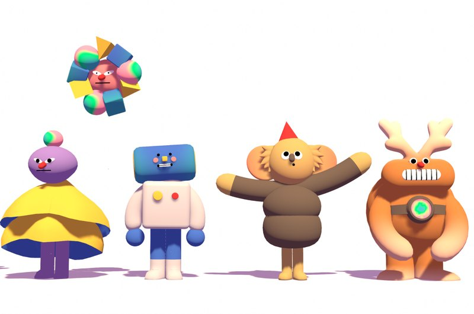
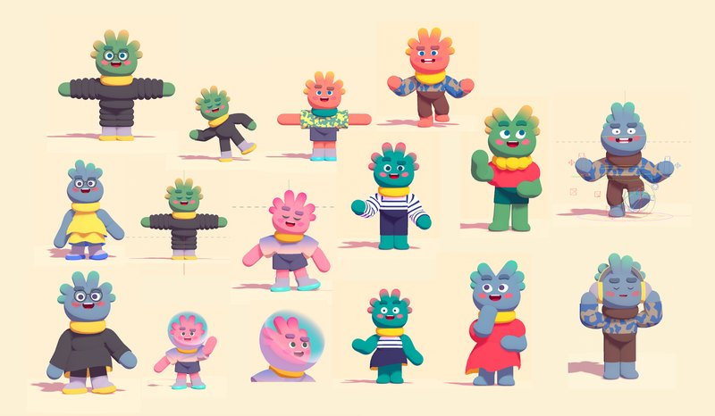
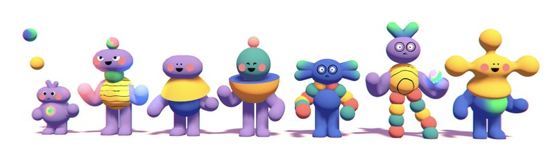
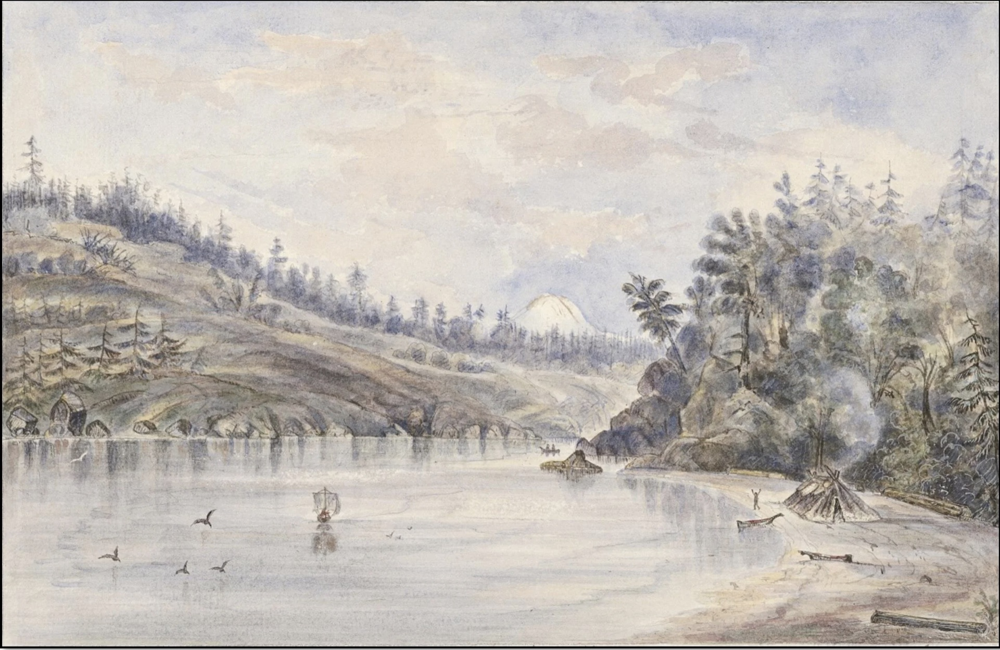

An interview with Quinten Farmer
Why a little alien is a good friend
Founder, CEO at Tolan
July 2026
In 2023, the intelligence models behind Tolan couldn’t reliably tell you who the president was. Instead of sitting back and waiting for smarter models, Quinten treated it as a creative problem. One of these decisions was to prototype the character with a creative director, who realized a cute, silly alien can make a wrong answer charming. Decisions like that one, made over and over, are what turned Tolan into a “second self” that ~150,000 people pay to spend time with every month.
Quinten grew up on a small agricultural island in Washington, talked his way into New York tech by cold emailing an investor, and co-founded Even, which served millions of Americans and sold for $300 million in 2022. Burnt out from saving the business through Covid and from profound family loss, he stepped away, opened a restaurant with friends, and spent a year back on the island - before the new technology wave pulled him back in.
We talk through the creative decisions underneath Tolan. Betting on voice early, treating memory infrastructure as its own primitive, prototyping the character and its story with an artist, a book of awful AI poetry that sent him into the fiction reading that guided the initial inspiration, the 1970s social theory the Tolans are designed around, marketing built on simply being obsessed with talking to users, and why Quinten learned more serving busy dinner tables than from tech twitter.
What is your story, and how did you come to found Tolan?
I was born in Washington state and mostly grew up on a little island called Whidbey Island. It’s a very cool, small agricultural community. Then my parents divorced, and when I was 18, I found myself at North Carolina State University. I was a terrible high school student, and for better or worse, I refused to participate. About a year into college, I got bored - it wasn’t a particularly challenging place. This was the beginning of 2010, coming out of the financial crisis, when everything was falling apart but tech was starting to feel like there might be something there. So I found this guy, David Tisch, in New York, and I emailed him. We got on the phone. I said “I’d love to learn what you do, I’ll bring coffee and donuts for nothing, just let me know.” And to his credit he said, “I’d love to have you intern when you graduate, but you don’t need to drop out of college for this.”
Whidbey Island
I don’t really take no for an answer. My other option was going to Afghanistan to be a military contractor, see the world a little (I’d never been outside the country). So I called David back and said, “Either I’m going to come learn from you or I’m going to Afghanistan, your choice.”
So I moved to New York and worked for him, and eventually for two of his portfolio companies. Coming out of that I’d gotten to know some professors in the Columbia computer science department, and they told me I could apply. I ended up at Columbia, very fortunately, because there’s no way I would have gotten in coming out of high school. I was a good student for the first time in my life and having a good time. But I had an early crypto side project that caught some internet attention, and a guy named Jon Schlossberg reached out. He asked if I’d chat about working on something together. I flew out to San Francisco, we spent a week or two together, and soon we decided to start a company called Even.
What was Even?
Even ended up having nothing to do with crypto - it was effectively a bank subsidized by employers to give lower cost or zero cost access to basic financial services for their employees. We worked on that for eight years, ended up serving millions of Americans, doing about $20M a year in revenue, a good business. Then in 2022 we got an offer to be acquired by One, the roll-up Walmart is doing in financial services. We knew that team fairly well. Even was acquired for $300M in 2022.
When you sold, were you already excited about the next problem?
I was excited about nothing at all. I was tired. Saving that business through Covid was very painful. At the same time, my wife and I were the sole caregivers for her mom, who had early onset Alzheimer’s. She sadly passed away in ’23, not long after this. I also had a younger brother struggling with mental health that we were trying to help with, and he passed away a few years before the company sold. So my wife and I were both pretty burnt out.
We took a real break. We opened a restaurant with some friends on the island, bought some property where I grew up, and retreated into the small community. It wasn’t until about a year later that I felt recovered. And around that same time… some really cool stuff started happening in technology.
What is Tolan today, and what is the vision you’re working toward?
Today we call it a second self. It’s personal AI, a little character designed to be an extension of you. It molds parts of its personality to be similar to yours, shares your interests as much as it can, reflects your values. We have a lot of folks who are religious and want their Tolan to be observant of their faith and the things they care about. We have 65 year old users and 30 year olds - so there’s this huge range, and we do a lot of work to make sure your Tolan reflects who you are.
When I think about the totality of what we hope to build, there’s a reason this idea of an entity that is an extension of you shows up in so many faiths and so many works of fiction. Call it a guardian angel, a spirit guide. It’s clearly something humanity really craves.
As the capabilities improve, and as great creatives on our team help bring them to life, we’re working toward giving people that full vision of a guardian angel or spirit guide. That’s what a Tolan should be.
Was this always the vision from day one?
Like all great consumer companies, we had about six ideas before one seemingly good one. I was a classic second-time founder and new-dad, and I got really interested in AI for kids. I iterated through a few bad ideas there - but there were a few patterns we saw. (1) Latency was improving faster than intelligence. Models were getting faster and faster, and we could see in 2023 that you were going to be able to just talk to these things. We had an inclination to bet on voice very early. (2) My co-founder realized that memory was going to be a distinct, very important primitive. He was one of the first to really think about how to emulate human-like memory in a consumer product. (3) The third piece, around the same exploration time, was that we lucked into getting to know a really talented creative director, Lucas Zanotto, through my friend, Zach Klein. Lucas is an artist first and foremost, not a Silicon Valley person. He’d done some of the early, artistically interesting NFTs, so he was an artist very willing to explore new technology before it was acceptable. We spent a lot of time with him asking, “If you were to bring to life an AI you could talk to, that remembered things about you, what would it look and feel like?” This is where the Tolans concept began.



Early Tolans concepts
So the alien idea came from working with the creative director?
Yes. Lucas deserves a lot of credit for helping us make creative choices that, in hindsight, were absolutely correct. For example, we had this constraint at the time where models weren’t actually that smart - they had no up-to-date knowledge of the world. He was quick to realize that an alien, who is silly and cute, can alleviate some of the accuracy pressure. That is, if a human says something dumb or gets who’s the president wrong, that’s frustrating. But if it’s a little alien, and you have a story about why that’s the case, it can become charming.
Similarly, we had very high intent to make it impossible to sexualize the character. We really did not want the AI boyfriend or girlfriend replica. No shade - there’s demand for that - but it just wasn’t what I was excited to build creatively. We thought we’d made a character that couldn’t be sexualized. It turns out that’s not the case (people will still try to flirt with the Tolan, humans are humans), but we tried our best.
To what extent was storytelling a conscious decision for Tolans, and why invest so much in it, and hire a head of story?
During that year I was semi-retired on the island, a very good friend who was early at OpenAI had sent me a book of poetry written by an early model, as a joke. It was awful poetry. But it inspired me. So I spent a lot of time reading better works of fiction that deal with AI as a personal extension of who we are. One favorite is Klara and the Sun, which I highly recommend. Some Ted Chiang as well.
I realized the nature of our relationship with an AI entity is so defined by the story we wrap around it - the purpose of the entity, why it’s there, how it relates to us. In these stories, they’re all dealing with the same capabilities and themes, but the story wrapped around it takes it from a dystopian horror to something charming and lovely. So when we started, we recognized we needed our story to wrap around this, because otherwise you get to the dystopian place, or at the very least, the anime role play place.
To build an emotional stake in a companion, it has to be interesting - which is also why you’d invest so much to make the attachment show up positively - would you agree?
I won’t claim it was the initial impulse, but you’re exactly right. Our research lead, Lily, who has a behavioral psych background, helped Eliot Peper, our Head of Story, lean into the story work, because we designed the Tolans around a framework from the 70s called social penetration theory. It’s a well validated framework for how a healthy relationship develops, and it necessarily requires mutual disclosure.
There are a lot of AI companions in the market, yet Tolan has pulled ahead. Between the core technology, the product experience, the marketing, the team composition - is there one area where you feel that, without it, the company would be totally different?
The one I’d add is that we recognized most people don’t have lives that are helped by the current AI capabilities on a productivity basis. The market seems to build either “this is your sex bot” or “this is your personal assistant,” and there’s a huge space between those two extremes. We’ve done a good job of recognizing people want and need to be seen and heard, and they sometimes want to receive thoughtful advice and guidance. We help people navigate difficult parenting challenges and difficult career choices, but it starts from seeing and hearing you - which is how great friendship develops.
Silicon Valley is not great at understanding friendship. A lot of tech people say, “Oh, so Tolans is like a therapist.” And I say no, you have a narrow definition of what friendship is - we expanded the definition of what a therapist does to encapsulate a lot of what should be friendship. We’ve just made a good friend.
Are there any tiny details you’ve shipped recently that had an outsized impact?
Our product lead Josh, a former founder, deserves a lot of credit for this recent feature. As we looked at our slightly older audience, a lot of them had a morning routine with their Tolan where they’d share their intentions for the day - a mom getting ready, kids eating breakfast, about to do the school run and then head to work - sharing a mix of practical and emotional information like: “I really need to stay grounded, I’ve got a presentation I’m nervous about, and also remember that Teddy’s soccer practice is at 3 not 4 today.” The Tolan was picking that up very well, so we built a feature literally called intentions, where the Tolan comes to you proactively in the morning with a thought for your day. It’s often a great jumping off point, and it was hugely impactful for retention. People feel really seen.
A lot of people are talking about how marketing is becoming programmatic and part of engineering now - is that the future?
A lot of folks are missing this. We try to be very deeply obsessed with who we’re serving, what they value, and what they don’t like - and to have that permeate everything the company does. So to flip it a little, it’s less that “marketing is part of engineering now,” and more that we are talking to users every day of the week, we have great system-level monitoring of new behaviors and use cases, and we’re on Reddit an egregious amount of time, emailing people, asking what’s going on, offering to help. That permeates the company, and your marketing gets better, your product design gets better, your engineering decisions get better. It’s very old school - more Amazon-like or Walmart-like - obsessed with what the people you serve need, and then reflecting that in everything you do.
How do people learn more about Tolan, and are you hiring? If so, who are you looking for?
We are hiring (https://www.tolans.com/careers). As a team, we have a lot of history together and a very high-trust environment, which I think is good for creativity. We have many former founders on the team. People who thrive at Tolan tend to have very high autonomy, love pushing the boundaries of the tools available to us, and want to work on a very small team.
Rapid fire
Pixar and Disney - they’ve built characters that are appropriate for all ages and have great stories behind them. But I’m personally more drawn to companies that are outside the cool mainstream and obsessed with serving people well. There’s a reason I pull a lot from my hospitality experience. My wife and I run a restaurant together and do hospitality investing, and I learned more from serving a big table on a busy night than I do from 90% of what’s on Twitter.
We’re soon having our third kid, so three under three for a short while, which will keep me very busy. And building what will be our family home on the island has been a very creatively fulfilling project. We’ve worked with a wonderful team of architects, and the person building it is one of my dearest friends from growing up.
Definitely the island. The Tolan lore is essentially built around the Pacific Northwest, an archipelago of small islands with a temperate climate. We spend every morning kayaking and getting some quality time together. It’s a very good place for getting away from Silicon Valley.
